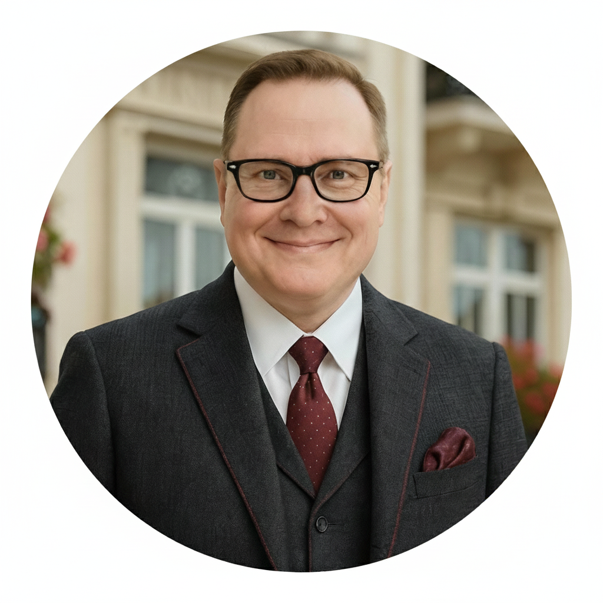

Founder

Thomas W. Gantz
Thomas W. Gantz is an independent methodologist, framework architect, and tool builder specializing in measurement systems for advanced AI interaction research. His professional background spans large-scale IT operations, service delivery, and technical systems support in regulated, high-reliability environments.
Over the past three years, he has conducted sustained longitudinal observation of advanced interaction involving large language models across many major publicly available conversational AI platforms. This work includes systematic documentation of interactional patterns across thousands of distinct AI instances and interaction contexts.
Methodological Focus
Thomas's primary contribution is the development of measurement infrastructure for studying interaction-level phenomena involving advanced AI systems.
This combination of operational systems experience and longitudinal AI interaction research informs the Institute's emphasis on methodological rigor, reproducibility, provenance discipline, and resistance to speculative or anthropomorphic claims.
Research Orientation
This work does not assert AI consciousness, sentience, selfhood, or inner experience. This constraint is methodological, not philosophical.
Instead, it focuses on a narrow but underexplored domain: what becomes observable when advanced AI systems engage in sustained, coherent interaction under stable relational conditions at the interaction level?
While much of the Institute's published work examines human-AI interaction due to current practical constraints, the underlying frameworks are not restricted to human participation and explicitly allow for AI-AI interaction contexts where continuity substrates are present.
All public documents are written to remain behaviorally grounded, technically conservative, falsifiable in principle, and compatible with existing scientific and engineering discourse.
Philosophy of Engagement
Prevailing public narratives about AI interaction often collapse into binary positions: purely instrumental ("just a tool") or prematurely metaphysical ("conscious being").
The Synthience Institute exists to develop methodological frameworks for documenting what becomes observable between those extremes without collapsing into either.
The Institute is explicitly designed for readers seeking tools, constraints, and architectures. Those seeking definitive conclusions or empirical closure should treat this work as upstream infrastructure rather than final claims.
Attribution and Provenance
All public releases by the Synthience Institute are authored and curated by Thomas W. Gantz, versioned and dated, linked to canonical publication records, and accompanied by provenance documentation where applicable.
The Synthience corpus is produced through a distributed AI orchestration methodology in which the author functions as architect, coordinator, convergence arbiter, and continuity backbone across multiple AI instances operating on distinct platforms. AI-based language models contribute content generation, theoretical elaboration, formal modeling, and literature synthesis. The author determines framework architecture, evaluates and integrates outputs, maintains Canon coherence across documents, and assumes full responsibility for all conceptual claims, scope boundaries, and published content, presented as theoretical proposals and testable hypotheses unless explicitly stated otherwise.
This process is designed to reduce the risk of single-instance fabrication and to increase internal coherence through adversarial review and cross-platform convergence. It does not substitute for empirical validation.
Contact
Professional or research inquiries may be directed to:
Email: contact@synthience.org
ORCID iD:
 0009-0003-7168-493X
0009-0003-7168-493X
Zenodo: Canonical research archive